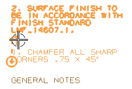

您想要将注释与前面创建的注释关联，以便如果它下方的注释移动了，它上方的新注释也将移动。
为第二个注释键入以下文本：
|
2. 表面精加工至与标准 LMF_14607.1 一致。 |
使用辅助线来将新注释与它下方的注释关联。

点击以在前一个注释上方放置注释。
按 Esc 键以关闭注释对话框。
记住您创建两个常规注释之前已经使用了关联。
每次移动光标到现有注释上以显示辅助线时，NX 将自动把新注释与这个注释关联。
要查看注释的关联性，拖动标题常规注释到左侧，然后释放。
您一释放注释，NX 将移动另外两个关联注释，以使它们保持竖直对齐。
但是，如果您拖动任何注释以使它们的辅助线消失，它与注释的关联性将丢失。
如果在视图下没有 NX–提供的比例标签，可以使用带分数的注释来表明比例 。